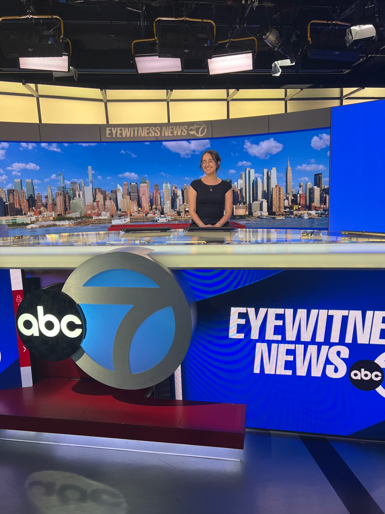

ABC7 promotional spot · Sample 01
NEW YORK CITY · CREATIVE PORTFOLIO
Sabrina
Torres.
Director · Video Editor · Creative Producer
I’m interested in the many moving parts that go into making a project come to life. My work spans narrative film, documentary, commercial video editing, digital content, and creative production.
Explore selected work ↘
ON SET AT ABC7 · NEW YORKDIRECTOR
EDITOR
PRODUCER
EDITOR
PRODUCER
A SELECTION OF MY WORK
Selected work.
Narrative storytelling, digital editing, and promotional work. A selection of projects across different stages of my career.
01 / PROMOTIONAL · ABC7
ABC7
Eyewitness News
As a Creative Services/Promotions Intern, I supported producers in preparing spots for air and helping projects move from preparation through completion. A few examples of the spots I worked on are below.
CREATIVE SERVICES / PROMOTIONS INTERNABC7 promotional spot · Sample 02
ABC7 promotional spot · Sample 03
ABC7 promotional spot · Sample 04
02 / DIGITAL CONTENT · VIDEO EDITING
Digital Artisans
Edited weekly videos for a creator with more than one million subscribers, shaping supplied footage through cutting, pacing, graphics, and sound.
03 / NARRATIVE FILM
Selected films
Independent narrative work exploring character, family, and the details that shape a story.
HOME
SWEET HOME
SWEET HOME
Home Sweet Home
Two sisters navigate the instability of their home life as they search for a way toward something better.
DIRECTOR · CO-WRITER · EDITORANATOMY
OF CHIMERA
OF CHIMERA
Anatomy of Chimera
A selected narrative editing project.
EDITORAdditional film stills and viewing links can be added as projects are cleared for sharing.
04 / EXPERIMENTAL FILM
Image, sound & form
Short experimental projects exploring camera, editing, and sound design, including a Super 8 film recognized at Super 8 Cinema Soirée XII in 2023.
SELECTED EXPERIENCE
Where I’ve
worked.
Professional experience across broadcast, digital content, film, and live production.
01ABC7 · DisneyCreative Services / Promotions Intern · 2024–2025
02Digital ArtisansVideo Editor & Camera Operator · 2022–2023
03Starfish StudiosVideo Editor & Camera Operator · 2022–2024
04Spoleto Festival USAVideo Technician · Summers 2022–2024
05Sound Tree Entertainment / AMP2TVProduction Assistant · Camera Operator · Producer
06The RideDispatch Technician · 2023–2025
ON SET
A LITTLE ABOUT ME
Creative thinking.
Practical doing.
I enjoy the balance of creative thinking and practical problem solving that goes into making a project come to life. I’m detail oriented, tend to think a few steps ahead, and enjoy working with people from different backgrounds and disciplines.
Whether I’m shaping a story in the editing room or helping coordinate a production, I value being part of the process and seeing an idea through to its final form.
MFA, Cinema Art · Specializing in Directing
Feirstein Graduate School of Cinema · 2026
HAVE A PROJECT IN MIND?
Let's make
something good.
Sabrinatorres08017@gmail.com ↗Based in New York City
LinkedIn ↗